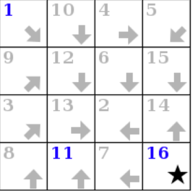
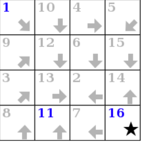

Due: Tuesday, 18 February 2020
Please see @331 for updates and changes to the assignment.
Navigation
- Introduction
- The Puzzle
- Program Design
- Instrumentation and Testing
- Discussion
- Submission and Version Control
Introduction
This initial programming assignment is intended to give you a chance to get familiar with Java and the various tools used in the course. This project is smaller in scale compared to the other three projects you will complete this semester. However, you may still find it challenging and we encourage you to start as early as possible.
We will be grading solely on whether you manage to get your program to work
(according to our tests, which are provided to you in the skeleton) and to hand in the
assigned pieces. There is a slight stylistic component: the submission and grading
machinery require that your program pass a mechanized style check (style61b), which
mainly checks for formatting and the presence of comments in the proper places.
See the style61b guide for a description of the style it enforces and how to run it yourself.
First, make sure that everything in your repository is properly updated and checked in. Before you start, the command
cd ~/repo
git statusshould report that the directory is clean and that there are no untracked files that should be added and committed. Never start a new assignment without doing this.
To obtain the skeleton files (and set up an initial entry for your project in the repository), you can use the command sequence
git fetch shared
git merge shared/proj0 -m "Get proj0 skeleton"
git pushfrom your repo directory. Should we update the skeleton, you can use the
same sequence (with an appropriate change in the -m parameter) to update your
project with the same changes.
The Puzzle
The puzzle game Signpost is one of Simon Tatham's collection of GUI games (available on a variety of operating-system configurations, including Ubuntu.) He attributes the puzzle to Angela and Otto Janko, who call it Pfeilpfad (arrow path). In this project, you are given an incomplete Java program that creates these puzzles and allows its user to solve them, and you must supply the missing parts to complete the implementation.
The puzzle itself is quite simple. It is played on a $W\times H$ rectangular grid of square cells. Every square on the board is annotated with an arrow pointing horizontally, vertically, or diagonally. One special square, the goal, is not annotated with an arrow, but instead is annotated with a star. The goal square also contains the number $W\cdot H$. Another special square, the start, always contains the number 1. By default, the start and the goal will appear in the top-left and bottom-right corners of the board, respectively. Alternatively, the puzzle may be set to have free ends, in which case the start and the goal squares may appear anywhere on the board. The bottom-left corner of the board has the coordinates $(0, 0)$, with the positive x-axis running horizontally to the right, and the positive y-axis running vertically upwards.
The player's goal is to assign each unnumbered square a sequence number so that the squares form a chain following the arrows from 1 to $W \cdot H$, using up all numbers in between. We say that square A is connectable to square B if B is one queen move away from A in the direction specified by A's arrow (here, "queen move" refers to the queen move in chess.) For example, in the following board, the start, at coordinates $(0, 3)$, is connectable to the squares at $(1, 2)$, $(2, 1)$, and $(3, 0)$.
If A and B are both already numbered, their numbers must be consecutive for them to be considered connectable. To connect two connectable squares, press and hold on the first in sequence and drag to the second. We say that the first is now the predecessor of the second, and the second is now the successor of the first. Whenever a square is numbered, any connected square also becomes numbered with the next or previous consecutive number, as appropriate. To disconnect two connected squares, press and hold on the first, drag to a position off the grid, and release.
If a square initially has a number on the unsolved board, it must be the number of that square in the sequence of connected squares. Such squares are said to be fixed. The start and the goal are always fixed.
When playing the game, the player is not obligated to start forming the sequence from the start. Two connectable squares can be connected even if they are unnumbered. That is, we can form groups of connected squares on the board, which may be connected later to form the solution sequence. If a group does not contain a numbered square, its squares are assigned a letter and an offset. For example, a, a + 1, a + 2 for the 1st, 2nd, and 3rd squares in the group's sequence. Once an unnumbered group is connected to a group whose squares are numbered, the members of the unnumbered group become numbered appropriately.
The diagrams below show a sample puzzle on the left and its solution on the right.
 

Play Time
The first step in tackling the project is to play the game. That is, you should familiarize yourself with what the final product should look like. You can do so by playing the game on an instructional machine using the staff solution program.
On the instructional machines (only), you can run the staff version of this program with the following command:
staff-signpostIt takes the same options as your project (see Instrumentation and Testing).
If you are working on your local computer you will have to SSH into your instructional machine to run the staff solution. To allow the GUI of the program to appear via SSH you will have to follow the instructions here: Staff GUIs over SSH. Section C of the linked guide will show you how to SSH to your instructional machine with X11 forwarding enabled (which allows to view the staff solution's GUI on your local computer over an SSH connection).
Once you are on an instructional machine, run the following command:
staff-signpost --logThis command starts the signpost program (specifically, the one implemented by the course staff). The --log option will output information about the program's execution. Every time the program is invoked, it creates a signpost puzzle board with some randomly generated solution. In your terminal you will see an output very similar to the following:
PUZZLE
4 4
1 14 12 15
8 5 13 4
7 6 2 3
9 10 11 16
1 10 16
ENDPUZZLEThis is a log of the program, describing its operations. In the first line, PUZZLE, indicates that a puzzle is being created. The second line indicates that it is a $4\times 4$ signpost puzzle. The next 4 lines define the solution of this puzzle. The 7th line says that the fixed numbers on the board are 1, 10, and 16. Finally, ENDPUZZLE indicates that this board is done initializing.
If you want to always get the same board, you can use the seed option as in the following example:
staff-signpost --seed=42 --logThe same seed number produces the same random sequence, which will make the puzzle deterministic. This way bugs and other behavior can be reproduced.
Now that the puzzle has been generated by the program, it's time to play the game. If we tried to connect the start to the square that contains 2 in the solution, the program would output the following log:
CONN 0 3 2 1There was an attempt to connect the square whose coordinates on the board are (0,3), and the square whose coordinates are (2,1). Try to play the game and see what are the logs the program produces. You should also try the options in the program's menu bar.
Program Design
The skeleton exhibits a design pattern in common use: the Model-View-Controller Pattern (MVC).
The MVC pattern divides our problem into three parts:
- The model represents the subject matter being represented and acted
upon—in this case incorporating the state of a board and the rules by
which it may be modified. Our model resides in the
ModelandPlaceclasses. - A view of the model, which displays the puzzle state to the user.
Our view resides in the
GUIandBoardWidgetclasses. - A controller for the puzzle, which translates user actions into
operations on the model. In our case, it also notifies the view when the
model has been modified. Our controller
resides mainly in the
Controllerclass, although it also uses the GUI class to read mouse clicks.
Your job for this project is to modify and complete the Model, Place,
PuzzleGenerator, and BoardWidget classes.
We've marked places that need attention with comments containing "FIXME" (the
style checker will point these out to you should you forget to fix one).
Don't let that stop you from looking at all the other code in these classes.
That's actually part of the point of giving you the skeleton. You can learn a
great deal about programming by reading other people's programs. It is unlikely that you
will be able to complete the "FIXME"s successfully without understanding the majority
of the provided code in the aforementioned classes.
The "FIXME"s appear in the classes Model, Place, and
PuzzleGenerator. There is also one trivial FIXME in BoardWidget, which
is only there as a stopgap to make the initial skeleton display something.
Generally the FIXME's will have instructions to implement something specific,
remove certain lines, etc.
Initially, the skeleton contains some dummy code so that when run, you'll see a board, although you won't be able to do anything with it to speak of.
Getting Started
This project is largely an exercise in reading someone else's program and understanding its intent, which is actually a common activity in "real-world" programming as well.
You'll see numerous uses of parts of the Java library we haven't talked about.
However, you have seen all these data structures in Python. Where Python has
lists, Java has arrays, ArrayLists, ArrayDeques, and LinkedLists (among
others). Where Python has dictionaries, Java has HashMaps and TreeMaps.
Where Python has sets, Java has HashSets, TreeSets, and BitSets. These and many more library classes are all defined in the online Java library documentation, which should constitute much of your bedtime reading for this semester.
We've gone to some pains to provide comments that actually indicate what things do (in sharp contrast, I fear, to standard practice these days). We'd like you to get into the habit of doing the same.
Reading and trying to understand these files and comments before beginning programming will be well worth the time. Spending up-front time before writing code can feel a bit counterintuitive at first. If you begin writing code before making an attempt to understand the preexisting code, you will likely struggle more. You need not understand every line of the given code, but you should strive to understand the different objects, their instance variables, what their instance methods do, and how the methods relate to one another. The comments in line with the methods and instance methods are a great way to begin learning about the code.
Before you start working on a particular class, you must read the comment
above the class to understand the object at hand. Then, continue to the bottom of the class
to read about its instance variables. Finally, read the comments of the methods that were provided
for you. Only after this exercise you will be truly prepared to tackle the first "FIXME".
A note on style: you will see that all instance and static variable names are preceded by an underscore. The underscore gives these variables no special powers. It is merely a visual signal to the programmer that a variable is an instance or static variable of a class.
This project makes considerable use of abstraction; the simpler functions you write will be instrumental in helping you accomplish more complex goals. Be sure to respect the abstraction barriers to minimize the impact of bugs or logical errors in your code. Further, if you find yourself bogged down by the details of a particular method, consider pausing to break it down into "helper" functions, each performing some coherent piece of the original function (only, as a stylistic matter, do give these new functions descriptive names, generally avoiding the word "helper" in the name.)
Detailed Overview of the Skeleton
We highly recommend that you complete the FIXMEs in the order specified here.
Place
A Place object represents an (x, y) position on a Signpost puzzle board. This class is used in
order to save coordinates as objects and to calculate relations between coordinates.
This class defines a private inner class PlaceList. You are welcome to read more about ArrayList
online, but you can also simply treat these objects like Python lists that hold Place objects.
That is, these objects are lists you can keep adding Place objects to using the
instance method add(Place e).
To make new Place objects across all classes, you should not use the Place(int x0, int y0) constructor.
There is a provided "factory" constructor, pl(int x, int y), that you should use instead. This
method saves all Place objects it creates, and if we try to instantiate a Place object that already
exists, pl will return the saved object, instead of instantiating a duplicate. For example, suppose
we instantiate a Place representing the coordinates $(0,2)$ on the board:
Place myFirstPlace = pl(0,2);If we never called pl with these arguments, it will call the place constructor to make this
Place object and save it in the _places static variable. This is a 2-dimensional array of Place
objects used to save all Places ever instantiated.
Now, if we define another place representing the same coordinates:
Place mySecondPlace = pl(0,2);pl will return the object it previously saved in _places. So, myFirstPlace and mySecondPlace
do not point to two different objects. Instead, they point to the same exact Place object in memory.
In this class you should implement the successorCells method. A buggy implementation of this method
was provided in HW1. If you were able to find the bugs, you can use your corrected version here. When you are done with successorCells, you should pass
the successorCellsTest unit test in PlaceTests.java.
Model.Sq
This is a nested class inside Model. One reason which we may want to have nested classes is that it allows us to logically group together classes whose implementations are intimately related.
The Sq class represents a square on the board and its contents. An Sq object and a Place object are not the same thing. A Place only corresponds to a particular coordinate on the board. In fact, every Sq object contains a Place instance variable that represents the coordinates of that Sq.
connectable
This is an instance method, so it has access to the this pointer, which points to
the Sq object that was used to call this method.
It may be worth looking at the Place class for a method that will help implement this.
connect
This is another instance method of the Sq class. Take a look at the instance variables of Sq if you have not already. Each Sq keeps track of its predecessor and successor Sqs. So, each group of connected Sqs is essentially a doubly-linked list. Each Sq in a group keeps track of its group's head, the first Sq in the connected sequence, and its group number. The comment above the Model class declaration details the group numbering convention used here.
You rarely need to assign or deal with group numbers directly. We have provided you methods
that will handle all the necessary operations needed to assign group numbers. Namely, newGroup,
releaseGroup, and joinGroups. You should read the comments above these methods and
understand when you should use them.
All the possible scenarios when connecting two squares are listed in the FIXME of this method.
Before trying to implement each item of the FIXME set up these scenarios on paper or on the
staff solution, and make sure you understand which instance variables should change after a
connection is made between two squares (which could potentially connect two distinct groups of squares).
When you finish implementing this method, you should be able to pass sqConnectTest() from ModelTests.java.
disconnect
After completing connect you should have a good understanding of how the program handles
groups of connected squares on the board. When disconnecting two squares, we essentially break
one group of connected squares into two groups. The resulting groups may contain one or more connected squares.
Before implementing this method, set up the scenarios described in the FIXME items
on paper or on the staff solution, and make sure you understand how the Sq objects in each
resulting group change as a result of the disconnect. Again, refer to the methods we provided you to deal with group numbering. The only time in which you should assign a group number directly is when a square is to join group -1 (when it should become unumbered and unlinked as a result of a disconnect).
After you are done with this method, you should pass the sqDisconnectTest() from ModelTests.java. This test is not comprehensive, so we highly recommend that you do not proceed to the next step before you are confident in your implementation of this method.
You should at least perform some sanity checks via ad hoc testing before you move on, or preferably write additional unit tests.
Model
After you have implemented the Place and Sq classes, you should have a good understanding of the purpose of these objects and what their methods are used for. Now it's time to implement the Signpost board. A Model object represents a Signpost puzzle. The instance variables of this object store the information needed to describe the state of the puzzle (the dimensions of the board, the arrows in the squares, which squares are connected, which squares have numbers, etc.) and will be updated as the puzzle is solved. This contains the vast majority of the code you will change, so understanding this file will be crucial.
arrowDirection
This method returns the direction from the square at coordinates $(x,y)$ to its successor in the
solution of the board. For example, if the starting square is at $(0,3)$ and the square whose sequence number is 2
in the solution of the board is at coordinates $(0,0)$, a call to arrowDirection(0,3) should return 4 (south).
There are no unit tests provided for this method, which means that you have to write your own tests to verify your solution works. We highly recommend that you do not proceed to the next step before you are confident in your implementation of this method.
Model Constructor
Next, implement the Model constructor, which takes in a 2D array representing the
solution of the board being constructed as a parameter. You will have to instantiate all squares on the board
correctly, based on the solution provided to the constructor. Some methods that you have
already implemented in Place, Sq, and Model will likely be useful here. The get methods from Model
may also be useful.
After you are done implementing this constructor, open PuzzleGenerator.java and locate the makePuzzleSolution method.
Remove the line that returns a hardcoded 2D array and instead uncomment return _vals;.
Do not touch findSolutionPathFrom or the assert statement. After doing so, you should
be able to pass arrowTest1 and initTest2 in ModelTests.java.
Model Copy Constructor
A copy constructor is a constructor that takes in an object of the class as a parameter, and creates a new distinct but identical object.
The Model object contains pointers to some other objects as instance variables. You should make new distinct copies of
these objects as well, being mindful not to just copy the pointers, but actually create new objects that are identical to the original.
For example, when you are copying over the squares in your _board instance variable. You don't want the pointers in the new Model's
_board to refer to squares in the original Model's _board that was passed in as a parameter.
Instead you should be creating new squares and adding them to your new _board.
Again, the getter methods from the Model class may be useful to implement this.
After implementing this constructor, remove the line specified in the FIXME from
BoardWidget.java, and you should now be able to pass copyTest in Model.java.
autoconnect
This method finds all numbered squares and makes connections between them if they are consecutively numbered and not yet connected.
After implementing this method, uncomment the line that calls model.autoconnect() in the getPuzzle method of
PuzzleGenerator.java. You should now be able to pass autoConnectTest in ModelTests.java.
solve
This method should solve the board. That is, for each square assign the sequence number specified in the board's
solution for that square, and make all the correct connections between the squares on the board. Strictly speaking, we should say that the method applies one
possible solution, since nothing in the Model class requires that there be
a unique solution to the puzzle.
However, our PuzzleGenerator class only creates puzzles with
unique solutions, (although one can set up ambiguous puzzles using the
--testing and --setup command line arguments to the Signpost program).
After you are done with this method, you should be able to pass solvedTest and initTest3
from ModelTests.java.
PuzzleGenerator
This class helps to randomly generate Boards.
There are two methods to implement here: findUniqueSuccessor and
findUniquePredecessor. These check to see if there is exactly one unconnected
square to
which a given square may validly be connected in a given Model object
(either after the given square for
findUniqueSuccessor or before for findUniquePredecessor), and returns that
square if so.
After implementing this method, you should pass the tests in PuzzleGeneratorTests.java, and hopefully
all the integration tests when running make check!
Instrumentation and Testing
To facilitate automated testing of your work, there are a few features that you can use to record sessions and to play back moves for testing or debugging purposes. The skeleton is set up so that when you start your program with
java -ea signpost.Main --logyou'll get a record on the standard output of all of the edges clicked, all the randomly created puzzles, and all the menu commands entered. The -ea option stands for "enable assertions". Typically logs would be printed to the terminal, but one might want to save them to a file which can be done by capturing a log through redirection. You can capture logs using redirection, like this:
java -ea signpost.Main --log > testing/myscript1.inThe --seed option will allow you to prime the random number generation so that
you can get the same set of random numbers each time:
java -ea signpost.Main --seed=42The same seed produces the same random sequence, which will make the puzzle deterministic. This way bugs and other behavior can be reproduced.
The --testing option reads in a script produced by --log and uses it (in
place of user clicks and random numbers) to supply the results of getPuzzle
and getCommand. It also prints out a textual display of the initial
board and after each command, which Tester.py can use to test the
program. For example, to read back the file myscript1, use
java -ea signpost.Main --testing testing/myscript1.inThis will print out what tester.py sees, which it compares to
testing/myscript1.out. Using --log and --testing, you can thus create
your own .in and .out testing files to augment the ones we've provided in
testing.
We have set up the Makefiles in the proj0 directory and in the signpost
subdirectory to have targets check and unit. In order to use make, you'll
need to install it. Follow the instructions here to do so.
Once installed, the command
make unitwill run all the unit tests on Model.java. If you try this on
the skeleton, you'll see that, unsurprisingly, it fails all these tests, giving
you an indication of what needs to be changed.
In addition, make check in the proj0 directory will run integration tests,
which run the program and check its outputs against expected output using the
scripts tester.py and testing.py in the testing subdirectory. Integration tests
test all the program's components together. By the time
you finish the project both make unit and make check should report no errors.
If your python command is python rather than python3 you may need to run
make check PYTHON=python to run the integration tests.
Running Integration Tests in IntelliJ
Integration tests used in make check are stored under the proj0/testing folder.
If you would like to run an integration test in IntelliJ so that you can use the
debugger, use the following steps:
- Navigate to the Main class in IntelliJ and open it.
- Click on Run > Edit Configurations...
- In the left sidebar of the pop-up window, under "Application", select Main.
- For "Program arguments", put in
--testing testing/<test_file>where<test_file>is the name of the file of the integration test you would like to run. For example, if you would like to run integration test 8, you should have--testing testing/test08.inas your program arguments. - Now you can click Run > Run 'Main' or Run > Debug 'Main' to run and use the debugger on the integration tests. Remember to set a breakpoint if you're debugging!
Submission and Version Control
It is important that you commit work to your repository at frequent intervals. Version control is a powerful tool for saving yourself when you mess something up or your dog eats your project, but you must use it regularly if it is to be of any use. Feel free to commit every 15 minutes; Git only saves what has changed, even though it acts as if it takes a snapshot of your entire project.
The command git status will tell you what you have modified, removed, or
added since the last commit. It will also tell you what you have
not yet sent to your central repository. You needn't just assume that things
are as you expect; git status will tell you whether you've committed and
pushed everything.
If you are switching between using a clone of your central repository on the instructional computers and another at home (or on your laptop), be careful to synchronize your work. When you are done working on one system, be sure to push your work to the central repository:
git status # To see what needs to be added or committed.
git add <filepath> # To add, or stage, any new files.
git commit -a -m "Commit message" # To commit changes.
git pushIf you start working on the other system, you then do
git status # To make sure you didn't accidentally leave
# stuff uncommitted or untracked (if you did, commit
# it before doing the next step.)
git pull --rebase # Get changes from your central repo.Submit your project by committing and tagging it:
git tag proj0-0 # Or proj0-1, etc.
git push
git push --tagsBe sure to respond to all prompts and to make sure the messages you get indicate that the submission was successful. Don't just "say the magic words" and assume that everything's OK.
Grading Details
While we provided you with an extensive suite of tests, we reserve the right to add hidden tests to the grader. Update (2/11): There will be no hidden tests in the grader.
A week before the project's due date we will release the project's autograder. However, you will only be given limited information from the autograder. It may not reveal what particular tests you are failing. Three days before the project's due date, the grader will show the complete logs.
The idea behind this policy is that we want you to get out of the habit of using the autograder to test and debug your program.
Update (2/11): Please see @584 on Piazza for autograder details.